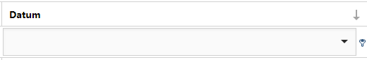

Groepeer door een kolomkop naar boven te slepen. U kunt kolomkoppen ook weer terug naar de tabel slepen.
Sorteer (oplopend/aflopend) door eenmaal in de kolomkop te klikken.
Selecteer
 voor meer informatie per getoond resultaat.
voor meer informatie per getoond resultaat.Selecteer
 om deze informatie weer te verbergen.
om deze informatie weer te verbergen.Filter binnen een kolom met een zoekopdracht. Klik op
 voor alle zoekopties.
voor alle zoekopties.
Wijzig gecombineerde filters door de Filter Builder te openen. Klik linksonder op de link.

Hier kunt u complexe filters samenstellen. Alle onderdelen kunt u wijzigen. Klik bijvoorbeeld op 'Datum' of 'Gebruiker' om de kolom waarop gefilterd wordt te wijzigen.

Verwijder alle filters door rechtsonder op Clear te klikken.
U kunt daar ook het aantal getoonde resultaten per pagina instellen.